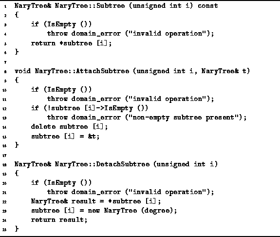

Data Structures and Algorithms
with Object-Oriented Design Patterns in C++
Data Structures and Algorithms
with Object-Oriented Design Patterns in C++
Program  defines the three member functions
for manipulating the subtrees of an N-ary tree.
The Subtree member function takes as its lone argument
an unsigned int, i, which must be between 0 and N-1.
It returns a reference to the
defines the three member functions
for manipulating the subtrees of an N-ary tree.
The Subtree member function takes as its lone argument
an unsigned int, i, which must be between 0 and N-1.
It returns a reference to the  subtree of the given tree.
Note that this operation is only defined for a non-empty N-ary tree.
Given that the tree is not empty,
the running time is O(1).
subtree of the given tree.
Note that this operation is only defined for a non-empty N-ary tree.
Given that the tree is not empty,
the running time is O(1).

Program: NaryTree Class Member Function Definitions
The AttachSubtree member function takes two arguments.
The first is an unsigned integer i between 0 and N-1.
The second is a reference to a NaryTree instance.
The purpose of this routine is to make the N-ary tree specified
by the second argument become the  subtree of the given tree.
It is only possible to attach a subtree to a non-empty node and
it is only possible to attach a subtree
in a place of occupied by an empty subtree.
If none of the exceptions are thrown,
the running time of this function is simply O(1).
subtree of the given tree.
It is only possible to attach a subtree to a non-empty node and
it is only possible to attach a subtree
in a place of occupied by an empty subtree.
If none of the exceptions are thrown,
the running time of this function is simply O(1).
The DetachSubtree member function takes a single argument i
which is an unsigned integer between 0 and N-1.
This routine removes the  subtree from a given N-ary
tree and returns a reference to that subtree.
Of course, it is only possible to remove a subtree from a non-empty tree.
Since every non-empty node must have N subtrees,
when a subtree is removed it is replaced by an empty tree.
Clearly, the running time is O(1) if we assume that no exceptions are thrown.
subtree from a given N-ary
tree and returns a reference to that subtree.
Of course, it is only possible to remove a subtree from a non-empty tree.
Since every non-empty node must have N subtrees,
when a subtree is removed it is replaced by an empty tree.
Clearly, the running time is O(1) if we assume that no exceptions are thrown.
 Copyright © 1997 by Bruno R. Preiss, P.Eng. All rights reserved.
Copyright © 1997 by Bruno R. Preiss, P.Eng. All rights reserved.